实验环境：VMware虚拟机，CentOS 7 系统。
YUM: Yellowdog Update Modifier，rpm的前端程序，可解决软件包相关依赖性，可在多个库之间定位软件包，up2date的替代工具，是为了进一步简化RPM管理软件难度以及自动分析所需软件包及其依赖关系的技术。
创建YUM仓库需搭建yum服务器端和配置yum客户端。
yum 仓库: yum repo，存储了众多rpm包，以及包的相关的元数据，文件（放置于特定目录repodata下）
仓库文件服务器包括如下几种：
http:// http 服务仓库
https:// https 服务仓库
ftp:// ftp 服务仓库
file:// 本地 服务仓库
首先我们需要搭建本地服务器，
1 首先在/mnt 目录下创建cdrom文件夹，并且将光盘挂载到此目录下：
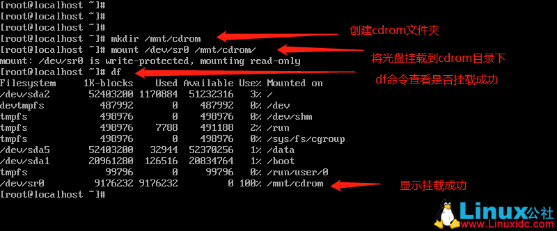
2 在/etc/yum.repos.d/目录下创建一个名为test.repo的文件，文件后缀必须为.repo，在此文件中填入如图中的格式，完成后保存退出。
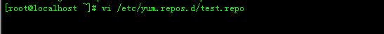
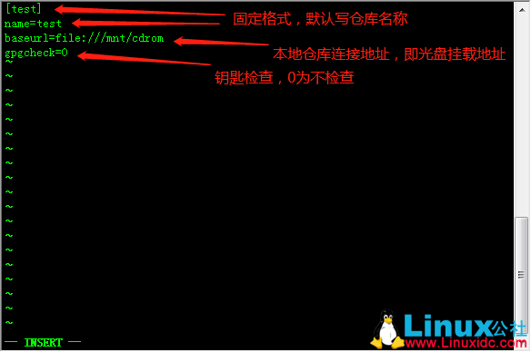
3. 配置好仓库文件后，可以进行软件安装测试，安装一个httpd 服务，出现如图中所示，则可以正常安装软件，说明本地YUM源仓库已将创建成功。
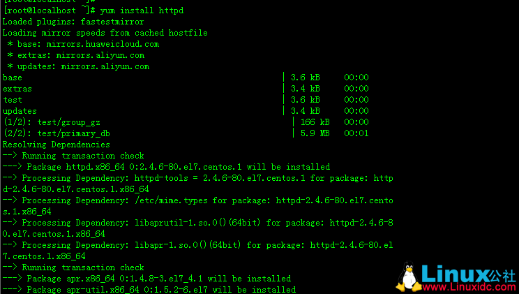
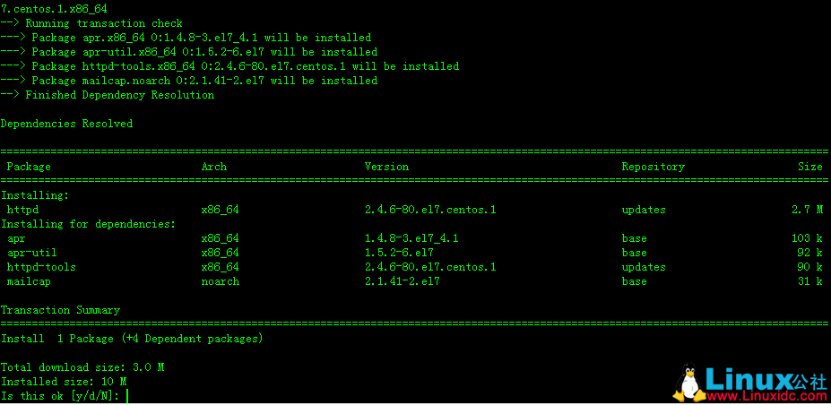
4.安装httpd服务，可以将已安装http服务的主机当做服务器，制作成其他主机的YUM仓库服务器，服务安装完成后需启动服务，并将服务设置成开机启动.
5. 输入ip a 命令查看本地网卡ens33的ip地址为192.168.168.133，打开浏览器，在浏览器中输入192.168.168.133 ，如果可以打开如下图的网页，则说明ftp服务启动成功（如显示打开失败，则输入iptables -F 清除防火墙规则，清除后即可打开）。
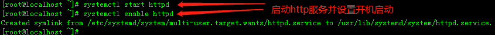
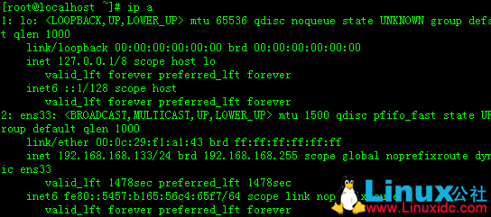
6.在http服务的家目录下创建相关yum源的目录，并将光盘挂载到此目录下，在浏览器地址栏中输入http://192.168.168.133/centos/ ，就可以看见创建的文件夹及挂载的光盘。
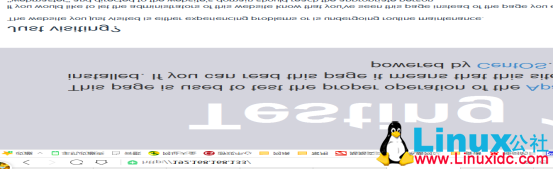
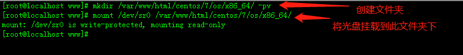
7.重新开启一台新的centos7 系统，在新开的系统中配置好YUM仓库的客户端，服务地址指向YUM服务器地址，其中$releasever 和$basearch为两个变量，防止yum服务器中的版本号改变导致yum客户端无法正常访问服务器。
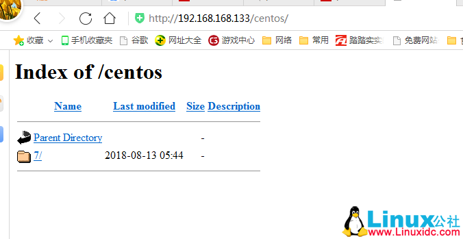
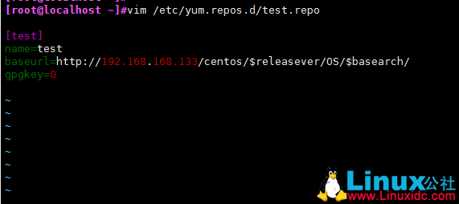
8 .配置完成后可以安装软件测试YUM仓库是否可以正常连接。到此yum仓库就已经创建完毕。
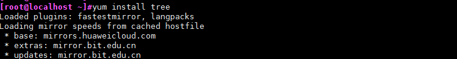
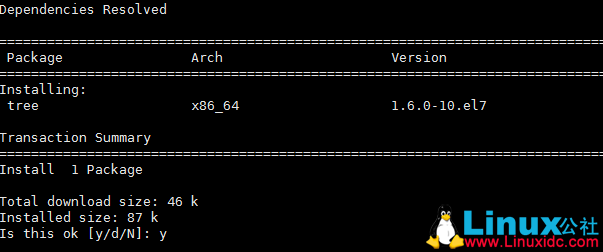